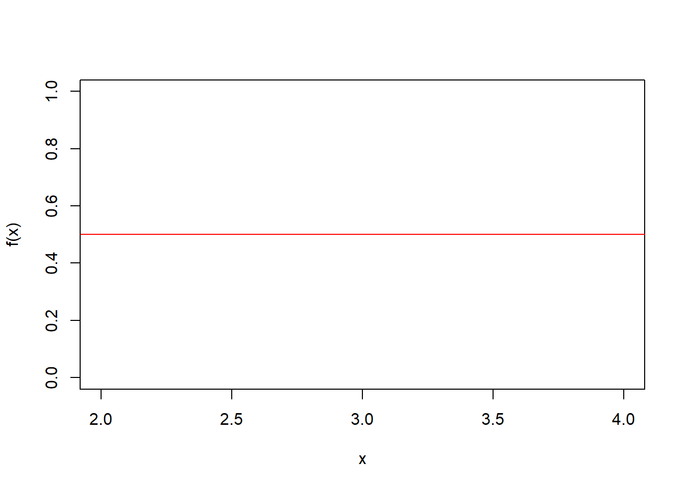

5 Tema 5: Distribuciones Continuas
5.1 Uniforme
Sea \(X\) una v.a, se dice que \(X\sim U(a,b)\), con \(a<b\). Si su función de densidad es:
\[f(x)=\frac{1}{b-a} \hspace{0.5cm}; x \in [a,b]\] Ejemplo,
Sea \(X\) una va, donde \(X\sim U(a=2,b=4)\). Dibuje la función y encuentre las probabilidades de:
- \(P(2<X<3)\)
- \(P(3<X<4)\)
- \(P(X<2.5)\)
Solución,
\[f(x)=\frac{1}{4-2}=\frac{1}{2}=0.5\]

\[\int_{Rx} f(x)dx=\int_2^40.5 dx=0.5 x/_2^4=0.5*(4-2)=0.5*2=1\]
- \(P(2<X<3)=0.5\)
\[P(2<X<3)=\int_2^3 0.5dx=0.5*(3-2)=0.5\]
- \(P(3<X<4)=0.5\)
\[P(3<X<4)=\int_3^4 0.5dx=0.5*(4-3)=0.5\]
- \(P(X<2.5)=0.25\)
\[P(X<2.5)=\int_2^{2.5} 0.5dx=0.5*(2.5-2)=0.5*0.5=0.25\]
Donde;
\[\begin{array}{ll} F(x) & =\frac{x-a}{b-a} \\ E[x] & =\frac{a+b}{2} \\ V[x] & =\frac{(b-a)^2}{12}\\ M_X(t) & = \frac{e^{bt}-e^{at}}{(b-a)*t} \end{array} \]
Demostración,
\[F(t)=P(X<t)=P(X\leq t)=\int_a^t \frac{1}{b-a} dx=\frac{1}{b-a}*x/_a^t=\frac{t-a}{b-a}\] Para una \(x\):
\[F(x)=\frac{x-a}{b-a}\]
\[P(X<2.5)=F(2.5)=\frac{2.5-2}{4-2}=\frac{0.5}{2}=0.25\] \[E[X]=\int_a^b x \frac{1}{b-a} dx=\frac{1}{b-a} \frac{x^2}{2}/_a^b=\frac{b^2-a^2}{2(b-a)}=\frac{(b+a)(b-a)}{2(b-a)}=\frac{a+b}{2}\]
Tarea, demostrar la varianza y la función generatriz de momentos.
- Un punto escogido al azar en el segmento de recta \([1,4]\). Calcular: * La probabilidad de que el punto escogido esté entre 2 y 3 * la probabilidad de que sea igual a 2 * la media y la varianza
Solución, sea X una va, \(X\sim U(1,4)\). \(f(x)=\frac{1}{3}\)
\[P(2<X<3)=F(3)-F(2)=\int_2^3\frac{1}{3}dx=\frac{1}{3}\]
\[P(X=2)=0\] \(E[X]=\frac{a+b}{2}=5/2=2.5\), \(V(X)=\frac{(b-a)^2}{12}=\frac{(4-1)^2}{12}=9/12=3/4\)
- (TAREA) La clase de un profesor esta programada para comenzar a las 10:00 am; pero él comienza su clase en un tiempo \(X\) que tiene distribución uniforme en el intervalo de 9:55 am. a 10:05 am. ¿Cuál es la probabilidad de que él comience su clase: * 2 minutos más temprano? * 2 minutos más tarde?
5.2 Exponencial
Sea \(X\) una v.a, se dice que \(X\sim exp(\lambda)\), con \(\lambda>0\) . Si su función de densidad es: \[f(x)= \lambda e^{-\lambda x} \hspace{0.5cm}; x>0\] Donde;
\[\begin{array}{ll} F(x) & = 1- e^{-\lambda x} \\ E[x] & =\frac{1}{\lambda}\\ V[x] & =\frac{1}{\lambda^2}\\ M_X(t) & = \frac{\lambda}{\lambda-t} \hspace{0.5cm}; t<\lambda \end{array} \]
Demostrando algunas propiedades,
\[\int_{Rx}f(x)dx=\int_0^{\infty}\lambda*e^{-\lambda x}dx=\lambda \int_0^{\infty}e^{-\lambda x}dx=\lambda \left(- \frac{e^{-\lambda x}}{\lambda} \right)/_0^{\infty}=-e^{-\infty}+e^0=-0+1=1\]
\[M_X(t)=E[e^{tx}]=\int_0^{\infty} e^{tx}\lambda e^{-\lambda x}dx=\lambda \int_0^{\infty} e^{-x(\lambda-t)} dx=\lambda \left( -\frac{e^{-x(\lambda-t)}}{(\lambda-t)} \right)_0^{\infty}=\frac{\lambda}{(\lambda-t)}*(-e^{-\infty (\lambda-t)}+e^0)=\frac{\lambda}{\lambda-t}\] Esto se da, siempre y cuando \(\lambda-t>0\), \(\lambda>t\)
Tarea, demostrar la \(E[X]\) y la \(V(X)\) a partir de la función generatriz de momentos.
5.3 Normal
Sea \(X\) una v.a, se dice que \(X\sim N(\mu,\sigma^2)\) si su función de densidad es: \[f(x)=\frac{1}{\sqrt{2\pi} * \sigma} e^{-\frac{1}{2} \left( \frac{x-\mu}{ \sigma}\right)^2 } \hspace{0.5cm}; -\infty \leq x \leq \infty\] Donde;
\[\begin{array}{ll} E[x] & =\mu\\ V[x] & =\sigma^2\\ M_X(t) & = e^{\mu t +\frac{1}{2} \sigma^2 t^2} \end{array} \]
5.4 Normal Estándar
Sea \(x \sim N(\mu, \sigma^2)\), entonces \(z=\frac{x-mu}{\sigma}\) es una v.a, y se dice que \(Z\sim N(0,1)\) es una normal estándar, si su función de densidad es: \[f(x)=\frac{1}{\sqrt{2\pi}} e^{-\frac{1}{2} z^2 } \hspace{0.5cm}; -\infty \leq z \leq \infty\] Donde;
\[\begin{array}{ll} E[x] & =0\\ V[x] & =1\\ M_X(t) & = e^{\frac{1}{2} t^2} \end{array} \]